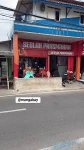
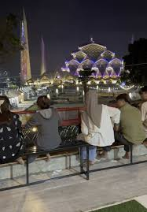
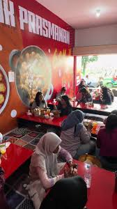

Tentang Kami
Seblak GSM adalah seblak parasmanan yang memiliki banyak topping. Seblak GSM menarik perhatian karena lokasinya yang dekat dengan masjid Aljabar. Seblak GSM buka hari Selasa - Minggu pada pukul 10.00 - 21.00 WIB, kecuali jika bumbu sudah habis maka tutup lebih cepat.
Galeri Foto



Lokasi
Jl. Cimincrang, Cimenerang, Kec. Gedebage, Kota Bandung.
Testimoni Pelanggan
Rizke PIP
"Seblaknya enak, banyak varian toppingnya, makannya bisa sambil liat Masjid Al Jabbar. Di lt 2 tempatnya luas, bisa duduk di kursi atau lesehan"
Sukron Ali
← Kembali ke Beranda
"mau ke Mesjid Al-Jabar....belum lengkap rasanya kalo ga mampir di seblak GSM...seblak nya enak,layananya memuaskan,dan suasananya adem menyenangkan. .itu pengalaman yang abah rasakan saat mampir di Seblak GSM"